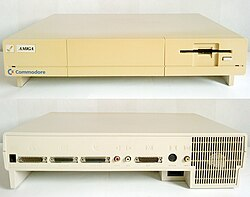
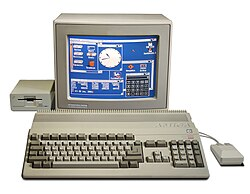
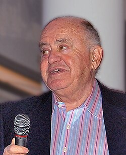
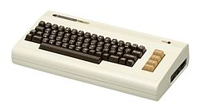
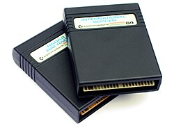

The Commodore 64 launched in January 1982 at $595 and became the best-selling personal computer model of all time — an estimated 12–17 million units. Its combination of capable graphics, legendary sound, and relatively low price made it dominant through the 1980s.
Designed by Bob Yannes in 1981. The SID (Sound Interface Device) was so far ahead of contemporary home computer audio that it spawned an entire subculture of musicians and composers. SID music is still actively composed and performed today.
The VIC-II chip supported exactly 16 colors. These weren't arbitrary — they were determined by the chip's internal voltage levels. Programmers and artists learned to work within these constraints, developing characteristic color combinations that define "the C64 look."
The default C64 screen was blue (#352879) with light blue (#6c5eb5) text — burned into millions of memories. The default border color was also light blue, giving the iconic "blue frame" look.
The demoscene emerged from the cracking scene — pirates who removed copy protection added "crack intros" to show off. These evolved into standalone artistic and technical demonstrations ("demos"). C64 demo groups competed to achieve the impossible from a 1 MHz CPU and 64 KB RAM. UNESCO recognized demoscene as cultural heritage in 2020.
Commodore acquired Amiga Inc. in 1984. The Amiga was technically stunning — a true multimedia machine years ahead of the Mac and PC. Its custom chips (Agnus, Denise, Paula) provided hardware-accelerated graphics and sound while the Motorola 68000 CPU handled computation. "Graphics, sound, and color that the IBM world is still trying to match" — Byte Magazine, 1985.




